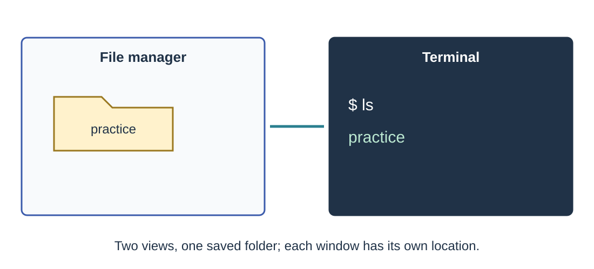
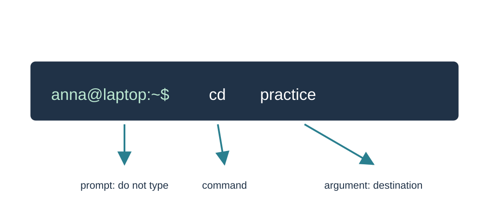
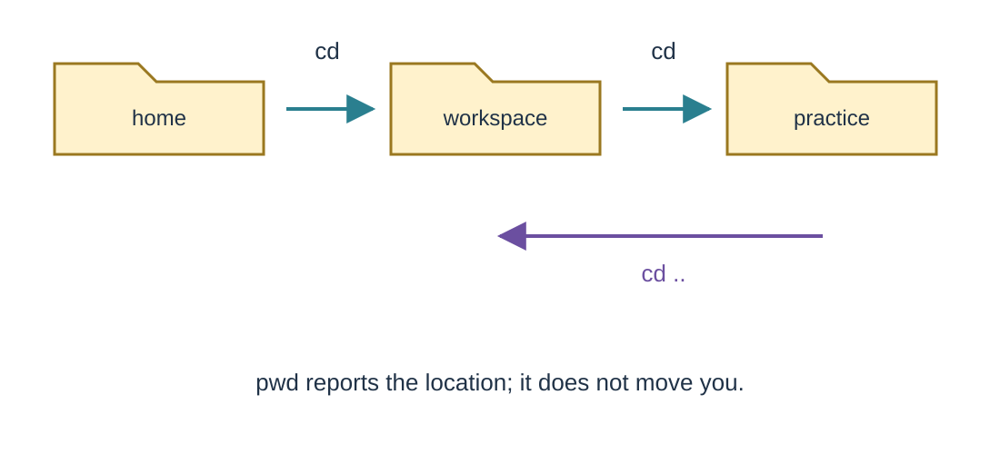
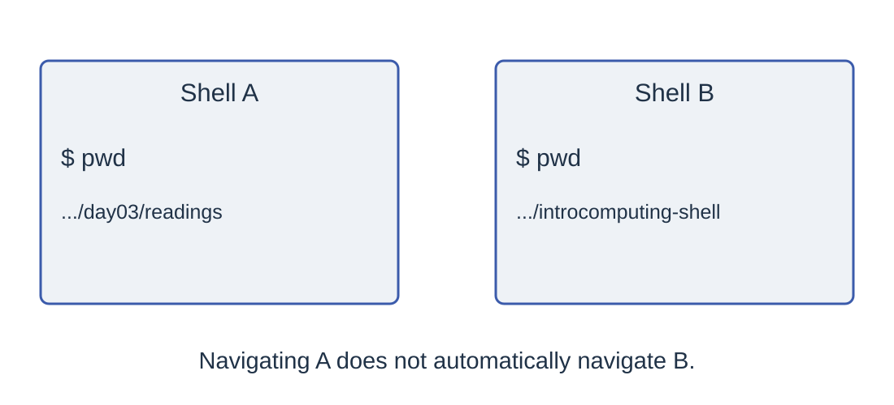
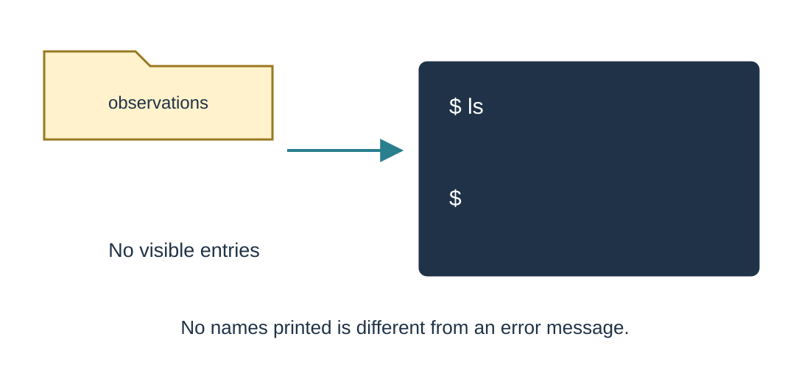
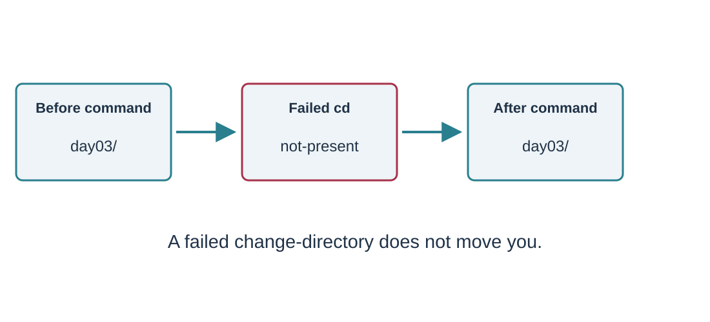
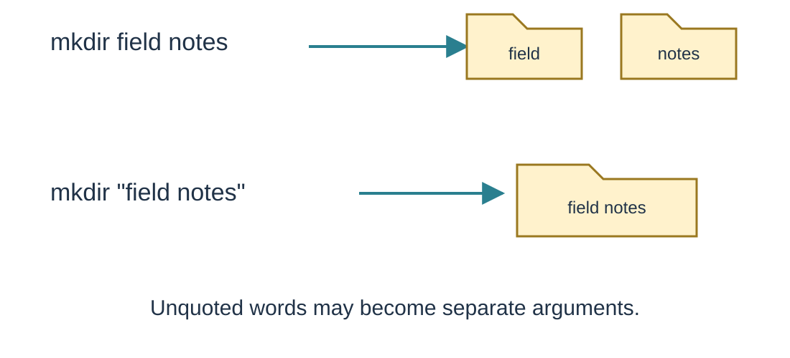
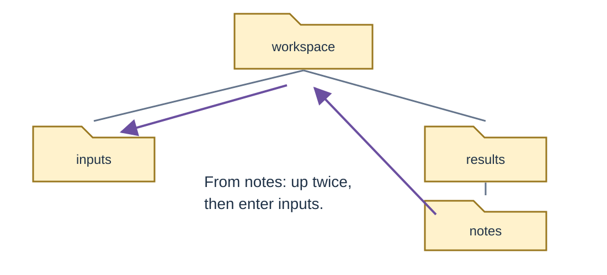

Why type commands when you can click? Because the computers that hold large biological data, such as a sequencing facility’s server or a university compute cluster, often have no desktop and no mouse. You log in and type. And a command you have written once can be repeated on 200 files instead of 200 rounds of clicking.
Today you will:
open a terminal and read its prompt;
ask where you are (pwd) and what is there (ls);
create folders (mkdir) and move between them (cd);
recover calmly when a command fails.
The folders are the same ones you clicked through on Days 1 and 2. We use these commands again on Day 4 and on the remote computer in week 5.
Same folders, another window
The terminal is a window where you type. The shell is the program that reads and runs what you type.
Windows: open Ubuntu. Mac: open Terminal.
Nothing new is stored. The terminal shows the same folders as the file manager, described in words instead of icons.

A file-manager window and a terminal listing show the same practice folder.
Read the prompt before typing

The terminal prompt, the cd command and the practice destination have different roles.
The prompt (anna@laptop:~$, or ending in % on a Mac) means “ready”. Do not type it.
Then comes the command (cd), then its argument: what it acts on (practice).
mkdir -p makes the folder, and its parent if needed.
pwd prints where you are, e.g. /home/anna/introcomputing-shell.
ls lists what is here. You should see practice.
Run one line at a time and read what each line prints.
Move down, and back up
cd practicemkdir seedlingsmkdir observationscd seedlingspwdcd ..pwd
.. means the folder one level up; ~ means your home folder.
Before each pwd, predict how the path will end.

cd moves into child folders; cd .. returns to the parent folder.
Each window has its own location
explorer.exe . (Ubuntu on Windows) or open . (Mac) opens the current folder in the file manager. The . means “here”.
Clicking into a folder there does not move the terminal. Check with pwd.
Two terminal windows can also stand in different folders.

Two terminal windows keep separate current folders.
Silence often means success
ls in an empty folder prints nothing. The folder exists; it is just empty.
Many commands, such as mkdir, print nothing when they work.
A real problem prints a message: read it.

ls in the empty observations folder prints no names before the next prompt appears.
When a command fails, you stay put
cd no-such-folderpwdcd ~/introcomputing-shell
The error says the folder does not exist. You are still where you were.
Check spelling and capitals: Observations is not observations on Ubuntu.
Lost? cd ~/introcomputing-shell brings you back.

A failed cd leaves the current folder unchanged.
Spaces split a name in two
The shell splits what you type at spaces. mkdir field notes makes two folders.
Quotes keep the words together: mkdir "field notes".
Easier: use names without spaces, such as field-notes.

Unquoted mkdir field notes creates two folders; quoted “field notes” creates one.
Keys that save typing
Tab completes a file or folder name. Type cd pra, press Tab.
Up arrow brings back the previous command. Read it before pressing Enter.
Ctrl+C stops a running command or clears a half-typed line. It does not copy.
Copy and paste in the terminal: Ctrl+Shift+C / Ctrl+Shift+V (Ubuntu), Command+C / Command+V (Mac).
Tab completion also prevents typos: it only completes names that really exist.
Worked example: a route between neighbours
You are in results/notes and want inputs:
cd ../../inputspwd
Up once to results, up again to the workspace, then into inputs.
A route only works from the starting folder it was written for. Write down the start too.

From notes, the route to inputs goes up two levels and then into inputs.
Check yourself
You run cd seedlings. Did any file move?
ls prints nothing. Did it fail?
cd Observations gives an error. Where are you now?
Which of pwd, ls, mkdir, cd creates something?
Summary
The terminal shows the same folders as the file manager, in words.
pwd tells you where you are; ls what is there.
mkdir makes a folder; cd moves you (.. up, ~ home). Moving changes nothing on disk.
No output is often success; an error message tells you what went wrong, and you stay where you were.
Quote names with spaces, or avoid spaces.
Next (Day 4, inspect and unzip): use the terminal to unpack an archive of laboratory files and look inside them.
Now:open the Day 3 exercises. Leave with the introcomputing-shell workspace and navigation-notes.txt in it: your pwd path, the route back from home, and three commands with their meanings.